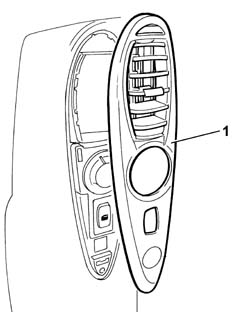
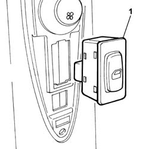
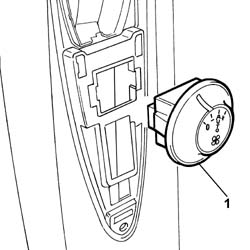

7040H36 CENTRAL TRIM LOWER ELEMENT - R R
- Path
- Procedures > 70 FITTINGS > 7040 BODY INTERIOR FITTINGS AND TRIM > 7040H ROOF PANEL LINING > 7040H36 CENTRAL TRIM LOWER ELEMENT - R R
- Kind
- repair procedure (removal / refitting; the operation number is the code)
- Applies to
- all engines; all production periods
- Interactive page
- https://sloeber94.github.io/elrnDB-fUlss/en/#/179007826
Applies to: all engines; all production periods
 Removing
Removing
 Refitting
RefittingOp. 5530B56 BATTERY DRIP TRAY COVER - R.R.
- Disconnect the negative battery terminal.
Op. 7065C30 INTERIOR L/H OR R/H GRAB HANDLE (ONE) - R+R
Op. 7040H38 CENTRAL PILLAR UPPER ELEMENT - R R
1. Using a suitable tool, release and remove the air vent from the centre pillar trim lower element.

Applies to: all engines; all production periods
1. Release and remove the rear door electric window control switch from the centre pillar trim lower element.

Applies to: all engines; all production periods
1. Release and remove the speed switch from the centre pillar trim lower element.

Applies to: all engines; all production periods
- Undo the fixing bolts and remove the air duct in the centre pillar trim lower element.
Applies to: all engines; all production periods
Refitting
Removing- Position the air duct in the centre pillar trim lower element and tighten the fixing bolts.
- Position the speed switch in the centre pillar trim lower element.
- Position the rear door electric window control switch in the centre pillar trim lower element.
- Position the air vent in the centre pillar trim lower element.
Op. 7040H38 CENTRAL PILLAR UPPER ELEMENT - R R
Op. 7065C30 INTERIOR L/H OR R/H GRAB HANDLE (ONE) - R+R
- Connect the negative battery terminal.
Topics linked from this page (3)
- 5530B56 BATTERY DRIP TRAY COVER - R.R.
- 7040H38 CENTRAL PILLAR UPPER ELEMENT - R R
- 7065C30 INTERIOR L/H OR R/H GRAB HANDLE (ONE) - R+R